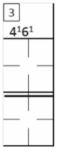

Cela se produit lorsqu'un joueur remplace un autre joueur dans l'ordre de passage au bâton. Son nom doit être inscrit à l'endroit approprié, sous celui du joueur remplacé. Une ligne verticale, comme dans l'exemple ci-dessous, indique à partir de quelle manche le nouveau joueur a commencé à jouer. La feuille de scorage de l'équipe adverse doit indiquer le moment où les positions défensives ont été modifiées, tout comme pour un changement défensif.
|
|
Dans cet exemple, un trait vertical épais indique qu'à la troisième manche, le joueur RICHIE John a frappé à la place de STREET Joseph. Sur l'autre feuille de la feuille de scorage, un trait horizontal est tracé pour marquer le moment où le joueur JORDAN Anthony a pris le poste de joueur de deuxième base, tandis que RICHIE John passait au poste d'arrêt-court.> |
NOTE:Évidemment, il n'y a pas de ligne verticale pour JORDAN, puisqu'il ne s'agissait que d'un changement de positions défensives.
Lorsqu'un nouveau joueur entre en jeu en attaque, et uniquement dans ce cas, il occupe la position de frappeur suppléant « PH » s'il remplace le frappeur précédent, ou de coureur suppléant « PR » s'il remplace le frappeur précédent alors que celui-ci avait déjà frappé et était sur les bases. Dans ce cas, « PH » ou « PR » est inscrit dans la case de gauche de la colonne « Pos ». Si le joueur devient ensuite un joueur défensif, inscrivez sa position défensive dans la case de droite. "Pos" column.
Veuillez noter que lorsqu'un frappeur désigné (DH) est remplacé par un nouveau joueur, ce dernier assume également le rôle de frappeur suppléant (PH). Si l'équipe revient sur le terrain sans effectuer de changement défensif, ce frappeur suppléant sera automatiquement enregistré comme frappeur désigné.
| Sur la feuille de l'équipe adverse,
Si, comme dans l'exemple, le nouveau joueur adopte une position défensive différente de celle qu'occupait le joueur qu'il remplace, un autre joueur défensif devra changer de poste en conséquence. Dans ce cas, il y aura à la fois un changement dans l'ordre de passage au bâton et un changement défensif. |
 |
Si un joueur est impliqué dans un changement de position interne et qu'il retrouve ensuite
sa position initiale, il reprend le numéro défensif qu'il portait à l'origine, lorsqu'il occupait ce poste pour
la première fois. Ainsi, dans le premier exemple de changement interne, si le joueur JORDAN retourne jouer à
l'arrêt-court, ses actions seront dès lors consignées sous le numéro 6, et non
 .
.
| Lorsque plus de trois joueurs se succèdent à la même position dans l'ordre de frappe, ou lorsque, pour une raison quelconque, l'espace manque pour inscrire un remplacement dans la case appropriée, le nom doit être porté dans l'espace situé après la neuvième position de l'ordre de frappe, en indiquant également le numéro de cette position, comme le montre l'exemple ci-contre. Les actions offensives et défensives sont consignées sur la même ligne que le nom, tandis que les jeux sont inscrits dans la partie centrale de la feuille de scorage. |

|